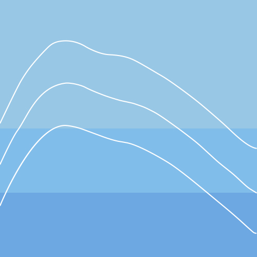

T > -1,正常范围
-2.5 < T <= -1,骨质流失
T <= -2.5,骨质疏松
超声波骨密度报告单
报告编号：1982749084092报告生成日期：
| 基本信息 | |||
| 姓名：王培娜 | 性别：女 | 年龄：22 | 升高：162cm |
| 其它信息 | |||
| 体重： | BMI： | ||
测试结果：

参考值范围：
| 测试数值： | Sos值： | T-值： | Z-值： |
|---|
测试结论：